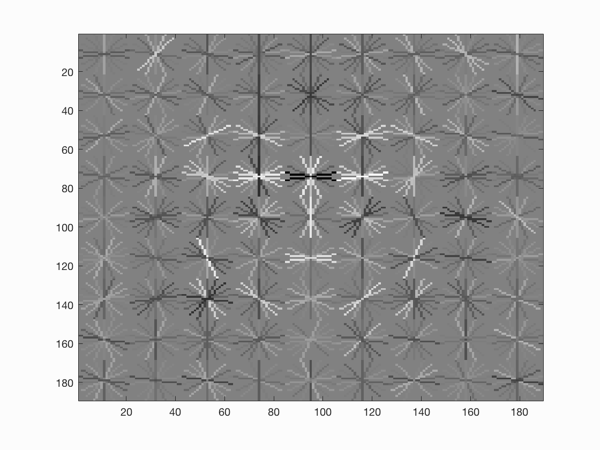

Project 5 / Face Detection with a Sliding Window
The project implemented a simple sliding window model. The pipeline is following:
- Get positive features
- Get negative features
- Train SVM
- Run detector
Get Positive Features
I represented features of faces with HOG using vl_hog in the vl_feat fuctions. Feature size is 36*36. I experimented with cell size 3,4 and 6. Usually the smaller the cell size, the better the result. To achieve better performance, I also extracted the features of the mirrored images based on the original images. The code below is for getting one hog_feat from one image and its mirrored one.
img = imread(fullfile(train_path_pos, image_files(ceil(i)).name));
img = single(img);
fimg = fliplr(img);
hog_feat1 = vl_hog(img, feature_params.hog_cell_size);
hog_feat2 = vl_hog(fimg, feature_params.hog_cell_size);
features_pos(i, :) = reshape(hog_feat1, dimensionality, 1,1);
features_pos(i + num_images, :) = reshape(hog_feat2, dimensionality, 1,1);
Get Negative Features
I represented features of non-faces with HOG. Since the size of each non-face image is not fixed, before calling vl_hog on each image, I ramdomly picked the start points of the feature boxes. Also, to obtain negaitive data under different scaling, I also scaled down each image by the factor of 0.9 after each extaction process. I repetitively did so until the image is not big enough for a single extration.
Train SVM
I used build-in svm learning function.
[w, b] = vl_svmtrain(train_data, train_label, LAMBDA, 'MaxNumIterations', 10 / LAMBDA);
Run detector
My code iterated all possible boxes of faces as the sliding window approach. If the confidence of the box is greater than the threshold, the box is kept as a face detection. I scale down test image by the factor of 0.9 after each thorough detection. The non-max suppression on the boxes to et rid of the repetitions.
Results in a table
|  | ||
 |
||
 |
||
 |
 |
 |
| step size = 6 | step size = 4 | step size = 3 |
 |
 |
|
 |
 |
|
| threshold = 0.6 | threhsold = 1 | threshold = 1.6 |